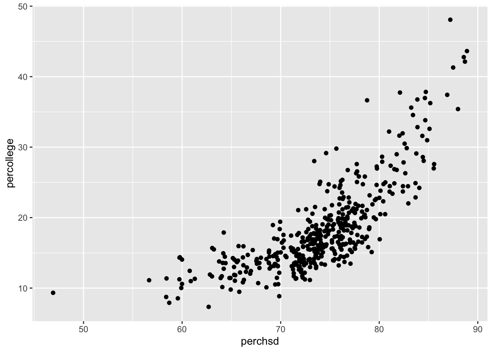
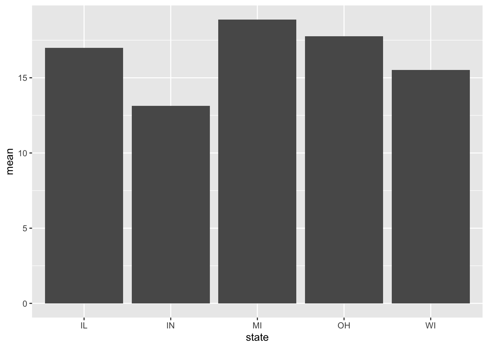
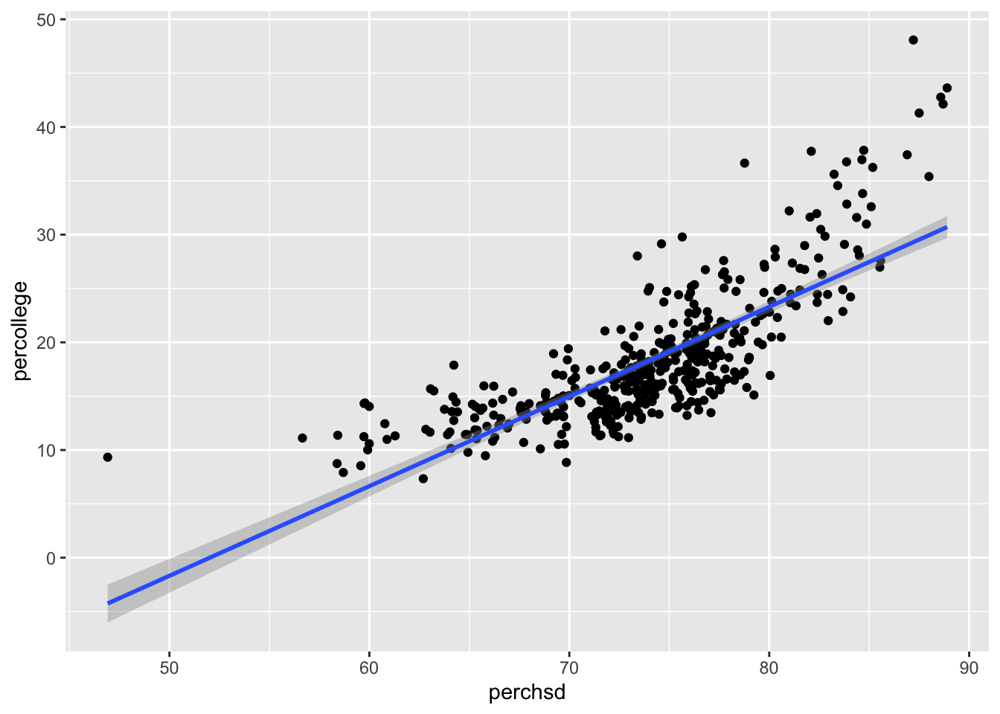
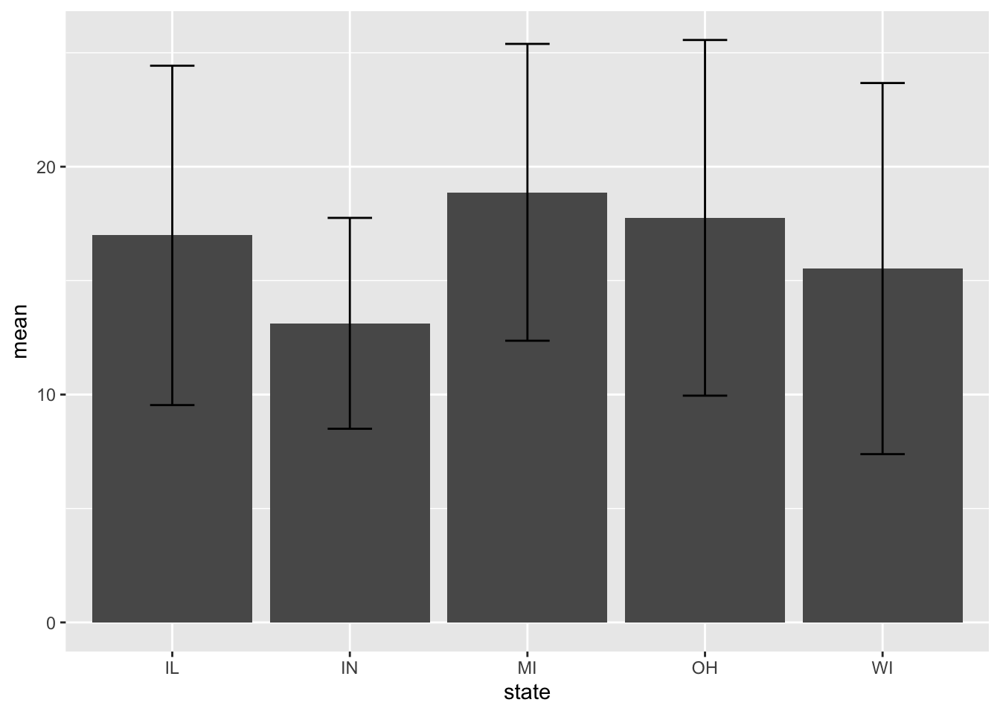
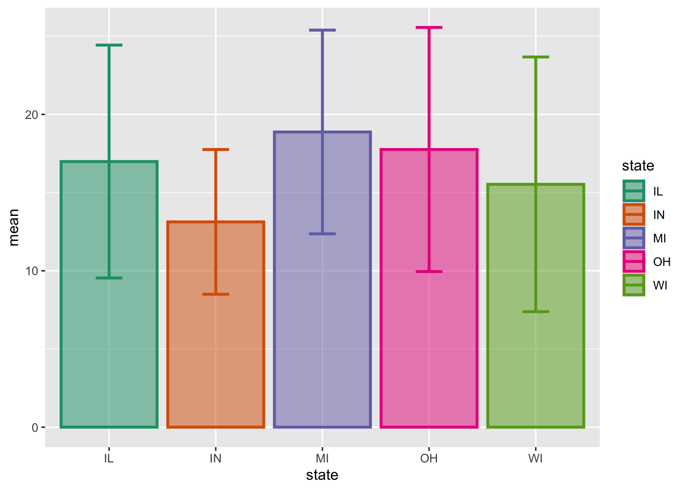
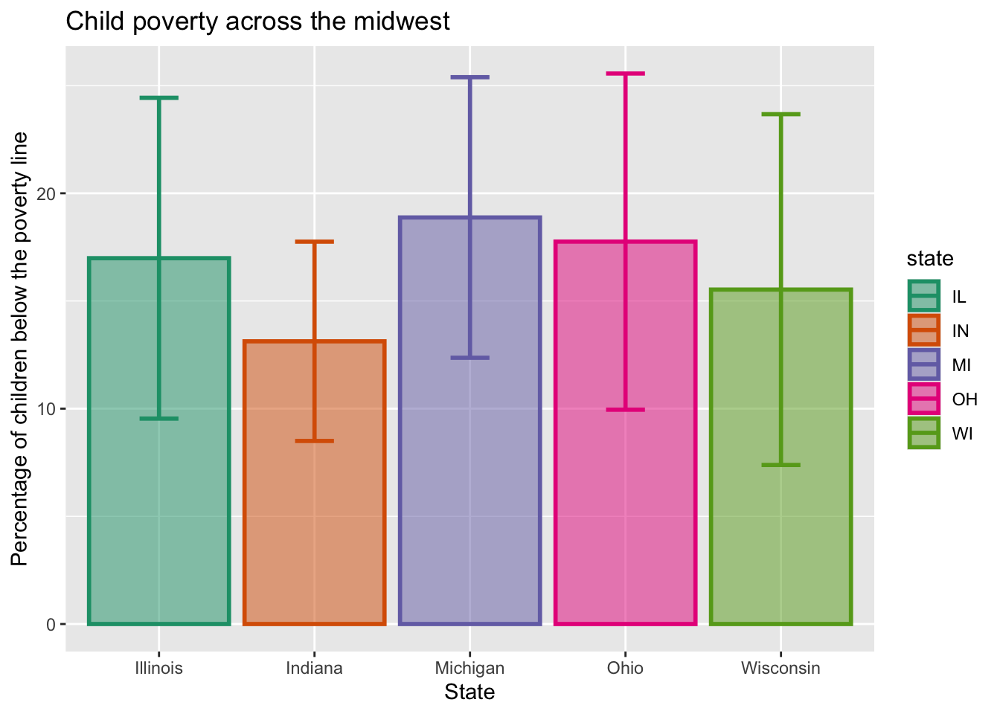
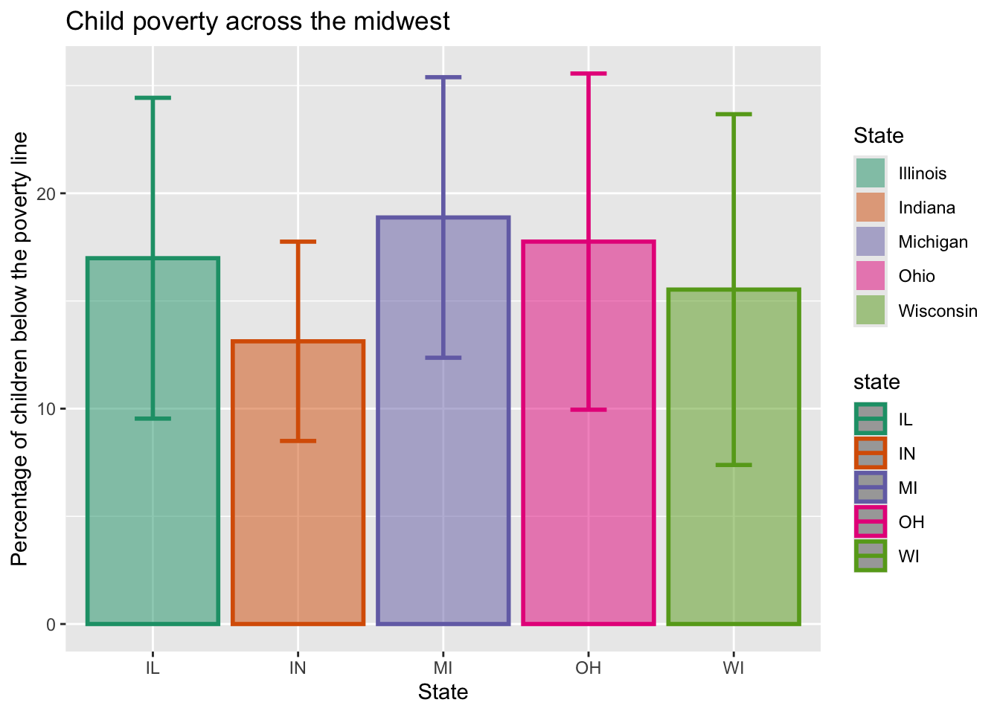
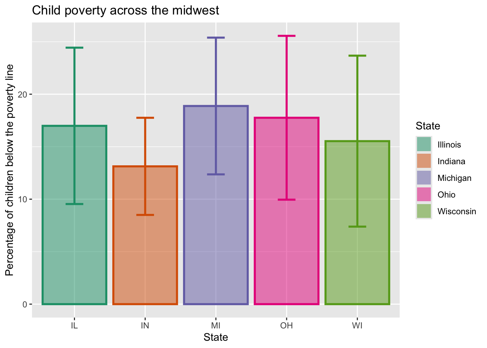
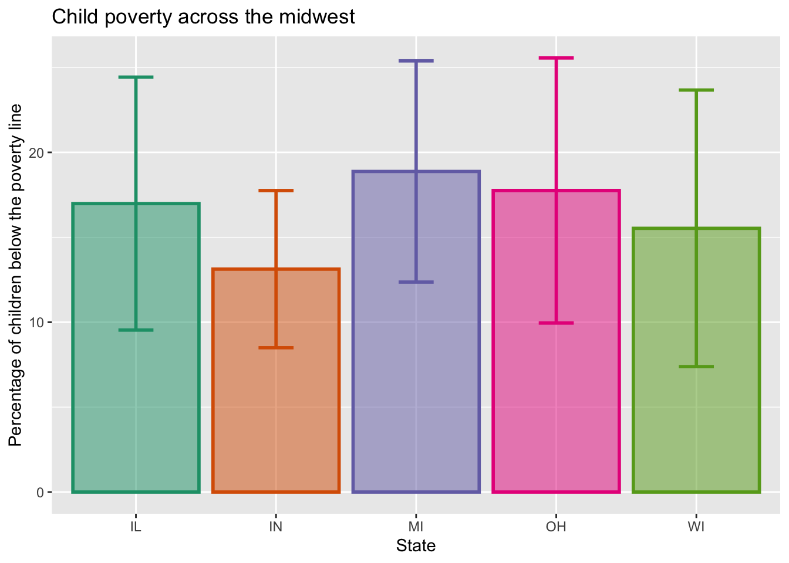
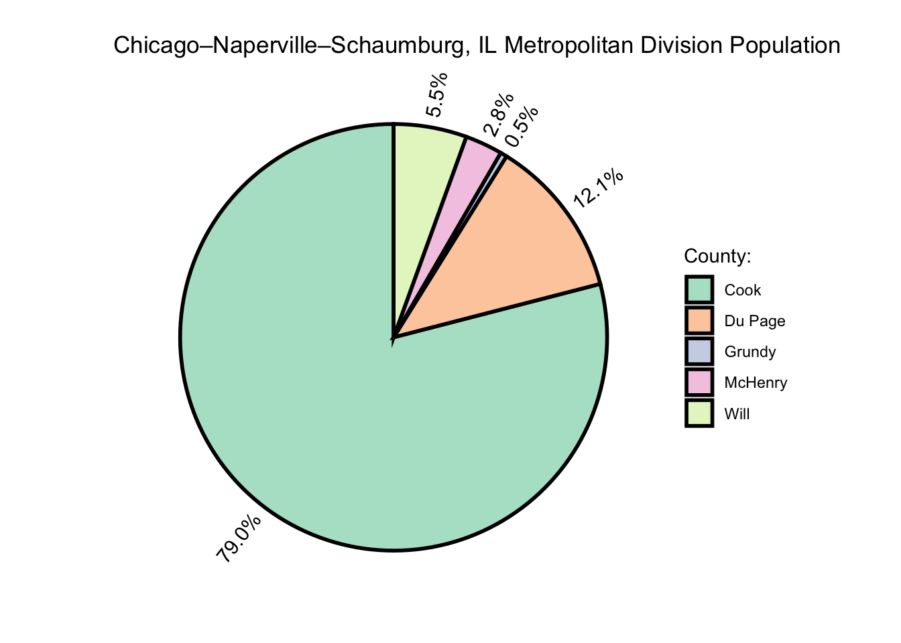

library(ggplot2)
data("midwest")
ggplot(data = midwest, aes(x = perchsd, y = percollege)) +
geom_point()
In week 4, we cover ggplot2 a package used for data visualization and graphing. Since we are starting to do more advanced tasks in R, we will also be learning some best practices and how to write readable, reproducible, and neat R scripts.
For this week we will be plotting using the following datasets that are available either through base R or a package we have already worked with/downloaded (ggplot). In the class codes, we used palmerpenguins data since we have been working with it for the past few weeks.
To start off a ggplot2 plot, you need 2 basic lines or layers. After each graphic layer you add a “+” and, typically, move to a new line.
Line 1: ggplot(data, aes(x, y)) +
Here you provide the information on what you want to graph. The first argument is data, here you provide the dataset you are hoping to visualize. Note, like most tidyverse packages, the data comes first. This allows you to pipe. The second argument is “mapping = aes().” I have never seen someone actually type out the mapping argument name because you pretty much always need to put something in there.
Within aes() [short for aesthetics!], you provide additional information. At minimum you will supply which variables you want on the x and y axis.
Line 2: geom_point()
The second is where you select one of ggplot’s geom options which lets you select a graph type. You will notice that if you don’t supply the geom type, you will just get a blank graph.
For some types of graphs, like scatter plots (which ggplot calls point plots), you are plotting individual points instead of summary statistics. Here I look at a correlation between high school diplomas and college diplomas across counties in the midwest.
library(ggplot2)
data("midwest")
ggplot(data = midwest, aes(x = perchsd, y = percollege)) +
geom_point()
In other situations (think bar graphs), you are plotting summary statistics. One way to think of this is that you want the bar to be at the mean value of something. To do this, you can do some more complex coding in R, but the way I learned to do it and what I have seen is the most common way of doing this is to first create a dataframe with the summary statistics and graph based on that. An alteranative could be calculating them and piping the data into the first ggplot call, but I think it’s more convenient to do it separately. When you do this, you need to include the stat = “identity” option as an argument within the geom call.
Here we look at the percentage of children experiencing poverty in the individual states represented here.
library(dplyr)
Attaching package: 'dplyr'The following objects are masked from 'package:stats':
filter, lagThe following objects are masked from 'package:base':
intersect, setdiff, setequal, unionsumstats <- midwest %>%
group_by(state) %>%
summarise(mean = mean(percchildbelowpovert),
n = n(),
sd = sd(percchildbelowpovert))
ggplot(sumstats, aes(x = state, y = mean)) +
geom_bar(stat = "identity")
#Here's the alternative piping method I mentioned, just to show it is possible.
# In some situations this might be more convenent for you!
midwest %>%
group_by(state) %>%
summarise(mean = mean(percchildbelowpovert),
n = n(),
sd = sd(percchildbelowpovert)) %>%
ggplot(aes(x = state, y = mean)) +
geom_bar(stat = "identity")
So by adding another layer we can depict multiple options using ggplot. In this example, we are using geom_smooth() which is useful for depicting best fit lines.
ggplot(data = midwest, aes(x = perchsd, y = percollege)) +
geom_point() +
geom_smooth(method = "lm")`geom_smooth()` using formula = 'y ~ x'
Here’s another (very) common option: adding error bars. Sometimes the default options for these add on genomes need to be adjusted. See the width option.
ggplot(sumstats, aes(x = state, y = mean)) +
geom_bar(stat = "identity") +
geom_errorbar(aes(ymin = mean - sd, ymax = mean + sd), width = 0.25)
fill vs color: You can use fill to determine the color that fills bar graphs, while color is the outline. Note: You need to tell ggplot what you are planning on separating the color by. For example, if you want each state’s bar a different color, you need to do “fill = state.” Here I also do “colour = state” but if I didn’t do this they would all have a black outline and error bar.
size: allows you to adjust the thickness of the outlines/error bars/similar objects
alpha: allows you to adjust the opacity of the fill
For color palettes I typically use color brewer. You can pick a palette for either fill or color using the scale_fill_brewer/scale_color_brewer(palette = palette) option. Running RColorBrewer::display.brewer.all() will give you the palette options. Other color palette packages/sets are available. I would recommend checking out viridis in your own time. You can also create your own using scale_fill_manual().
ggplot(sumstats, aes(x = state, y = mean, fill = state, colour = state)) +
geom_bar(stat = "identity", alpha = 0.5, #adjust opacity (alpha)
size = 1) + # change the size (thickness of outline)
geom_errorbar(aes(ymin = mean - sd, ymax = mean + sd), #note the syntax here
width = 0.25, size = 1) + # change the width/size of error bars
scale_fill_brewer(palette = "Dark2") + # pick a palette
scale_color_brewer(palette = "Dark2")Warning: Using `size` aesthetic for lines was deprecated in ggplot2 3.4.0.
ℹ Please use `linewidth` instead.
Most likely you are going to want to change axis labels, etc. you do that with the labs layer.
ggplot(sumstats, aes(x = state, y = mean, fill = state, colour = state)) +
geom_bar(stat = "identity", alpha = 0.5,
size = 1) +
geom_errorbar(aes(ymin = mean - sd, ymax = mean + sd),
width = 0.25, size = 1) +
scale_fill_brewer(palette = "Dark2") +
scale_color_brewer(palette = "Dark2") +
labs(title = "Child poverty across the midwest", #for the main one, use title
y = "Percentage of children below the poverty line",
x = "State")You also might want to label the bars a little differently than how they are labeled in your dataset.
ggplot(sumstats, aes(x = state, y = mean, fill = state, colour = state)) +
geom_bar(stat = "identity", alpha = 0.5,
size = 1) +
geom_errorbar(aes(ymin = mean - sd, ymax = mean + sd),
width = 0.25, size = 1) +
scale_fill_brewer(palette = "Dark2") +
scale_color_brewer(palette = "Dark2") +
labs(title = "Child poverty across the midwest",
y = "Percentage of children below the poverty line",
x = "State") +
scale_x_discrete(labels = c("Illinois", "Indiana", "Michigan",
"Ohio", "Wisconsin")) #changing the bar titles
Alternatively, you can change the names in the legend or the main legend title.
ggplot(sumstats, aes(x = state, y = mean, fill = state, colour = state)) +
geom_bar(stat = "identity", alpha = 0.5,
size = 1) +
geom_errorbar(aes(ymin = mean - sd, ymax = mean + sd),
width = 0.25, size = 1) +
scale_fill_brewer(palette = "Dark2",
name = "State",
labels = c("Illinois", "Indiana", "Michigan",
"Ohio", "Wisconsin")) + # here for fill
scale_color_brewer(palette = "Dark2") +
labs(title = "Child poverty across the midwest",
y = "Percentage of children below the poverty line",
x = "State")
Notice how you had a legend that was both color and fill before. Now that you changed the labels on fill, the color ones are separate. You can remove them using guides, as below.
ggplot(sumstats, aes(x = state, y = mean, fill = state, colour = state)) +
geom_bar(stat = "identity", alpha = 0.5,
size = 1) +
geom_errorbar(aes(ymin = mean - sd, ymax = mean + sd),
width = 0.25, size = 1) +
scale_fill_brewer(palette = "Dark2",
name = "State",
labels = c("Illinois", "Indiana", "Michigan",
"Ohio", "Wisconsin")) +
scale_color_brewer(palette = "Dark2") +
labs(title = "Child poverty across the midwest",
y = "Percentage of children below the poverty line",
x = "State") +
guides(color = "none") #LOOK HERE
Since your graphs are already labeled, you might want no legend at all. You can either remove the legends one-by-one like we did above or remove them all at once like I do below.
ggplot(sumstats, aes(x = state, y = mean, fill = state, colour = state)) +
geom_bar(stat = "identity", alpha = 0.5,
size = 1) +
geom_errorbar(aes(ymin = mean - sd, ymax = mean + sd),
width = 0.25, size = 1) +
scale_fill_brewer(palette = "Dark2") +
scale_color_brewer(palette = "Dark2") +
labs(title = "Child poverty across the midwest",
y = "Percentage of children below the poverty line",
x = "State") +
theme(legend.position = "none")
Here’s an example: pie charts using ggpie!
Note: you need a column named “count” to get this to work. The options are a little different but can be found in the help file.
library(ggpie)
piesum <- midwest %>%
filter(state == "IL") %>%
filter(county %in% c("COOK", "DU PAGE", "GRUNDY", "MCHENRY", "WILL")) %>%
group_by(county) %>%
summarise(count = poptotal)
ggpie(data = piesum, group_key = "county",
label_pos = "out", label_info = "ratio",
label_size = 4) +
scale_fill_brewer(palette = "Pastel2",
name = "County:",
labels = c("Cook", "Du Page",
"Grundy", "McHenry", "Will")) +
labs(title = "Chicago–Naperville–Schaumburg, IL Metropolitan Division Population")Scale for fill is already present.
Adding another scale for fill, which will replace the existing scale.